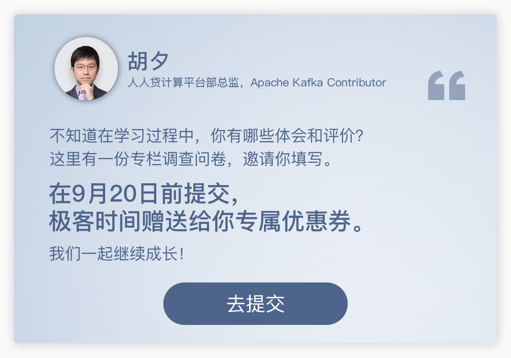
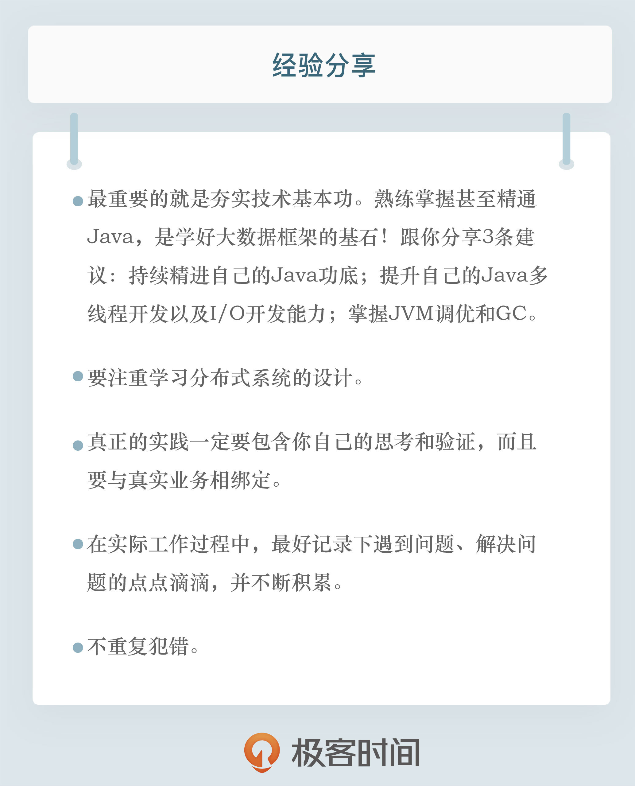

- 00 开篇词 为什么要学习Kafka？.md.html
- 01 消息引擎系统ABC.md.html
- 02 一篇文章带你快速搞定Kafka术语.md.html
- 03 Kafka只是消息引擎系统吗？.md.html
- 04 我应该选择哪种Kafka？.md.html
- 05 聊聊Kafka的版本号.md.html
- 06 Kafka线上集群部署方案怎么做？.md.html
- 07 最最最重要的集群参数配置（上）.md.html
- 08 最最最重要的集群参数配置（下）.md.html
- 09 生产者消息分区机制原理剖析.md.html
- 10 生产者压缩算法面面观.md.html
- 11 无消息丢失配置怎么实现？.md.html
- 12 客户端都有哪些不常见但是很高级的功能？.md.html
- 13 Java生产者是如何管理TCP连接的？.md.html
- 14 幂等生产者和事务生产者是一回事吗？.md.html
- 15 消费者组到底是什么？.md.html
- 16 揭开神秘的“位移主题”面纱.md.html
- 17 消费者组重平衡能避免吗？.md.html
- 18 Kafka中位移提交那些事儿.md.html
- 19 CommitFailedException异常怎么处理？.md.html
- 20 多线程开发消费者实例.md.html
- 21 Java 消费者是如何管理TCP连接的_.md.html
- 22 消费者组消费进度监控都怎么实现？.md.html
- 23 Kafka副本机制详解.md.html
- 24 请求是怎么被处理的？.md.html
- 25 消费者组重平衡全流程解析.md.html
- 26 你一定不能错过的Kafka控制器.md.html
- 27 关于高水位和Leader Epoch的讨论.md.html
- 28 主题管理知多少_.md.html
- 29 Kafka动态配置了解下？.md.html
- 30 怎么重设消费者组位移？.md.html
- 31 常见工具脚本大汇总.md.html
- 32 KafkaAdminClient：Kafka的运维利器.md.html
- 33 Kafka认证机制用哪家？.md.html
- 34 云环境下的授权该怎么做？.md.html
- 35 跨集群备份解决方案MirrorMaker.md.html
- 36 你应该怎么监控Kafka？.md.html
- 37 主流的Kafka监控框架.md.html
- 38 调优Kafka，你做到了吗？.md.html
- 39 从0搭建基于Kafka的企业级实时日志流处理平台.md.html
- 40 Kafka Streams与其他流处理平台的差异在哪里？.md.html
- 41 Kafka Streams DSL开发实例.md.html
- 42 Kafka Streams在金融领域的应用.md.html
- 加餐 搭建开发环境、阅读源码方法、经典学习资料大揭秘.md.html
- 用户故事 黄云：行百里者半九十.md.html
- 结束语 以梦为马，莫负韶华！.md.html
- 捐赠
结束语 以梦为马，莫负韶华！
你好，我是胡夕。今天，我的专栏“Kafka核心技术与实战”就正式结束了。
回顾与你在专栏相聚的这几个月，我的内心充满了成就感。且不必说这42讲的文字全是我一字一键敲下来的，也不必说那长达十几个小时的录音，单是留言区那些踊跃积极的提问与讨论，就足以使我深受感动并收获满满了。
此时此刻，千言万语汇成一句话：“感谢！”感谢你对我和本专栏的支持，感谢你曾经的鼓励与提问，也感谢你的肯定与期望。另外，我也要向你表示祝贺，祝贺你完整地学习了专栏的全部课程，你的恒心与坚持令人敬佩。
虽然专栏更新结束了，但是我相信我们的Kafka学习之旅不会结束。相反，这对于你来说，或许是一个新的开始。
还记得开篇词里的那句话吧：“Stay focused and work hard！”我一直觉得，学习任何技术，甚至是搞定任何事情，只要下足了功夫，理论上你可以藐视一切学习方法或捷径。但是，如果你忽视了毅力和坚持，再多的速成教程也无法引领你达到你期望的高度。著名的“10000小时定律”就明确表示，10000个小时的锤炼，是所有人从平凡人变成世界级大师的必要条件。
还是那句话，只要你持之以恒地投入时间去学习，你就能成为某个领域的专家。因此，从某种意义上说，我这碗“鸡汤”的配料非常简单，就四个字：干就完了。
那这是不是在说书籍、专栏之类的他人智慧总结就没用了呢？当然不是！他山之石，可以攻玉，书籍和专栏的最大作用就在于，当你遇到岔路口时，它们能够帮助你快速地识别前进中的已知路障，让你少走弯路，更快地实现目标。但前提是你要在路上，而不是单纯地想要依赖它们速成。
在专栏的最后，我想再和你分享一些学习大数据框架的个人经验。这些经验不仅仅适用于学习Kafka，对于其他框架甚至是分布式系统的学习，都是适用的。
首先，最重要的就是夯实技术基本功。这是我们IT从业者赖以生存的基石。
这里的基本功包含很多方面，比如操作系统、数据结构等，但我更想说的，还是对Java语言的掌握。
目前，大数据框架多是以Java或JVM系语言开发而成的，因此，熟练掌握甚至精通Java，是学好大数据框架的基石！所谓精通，不仅仅是要求你熟练使用Java进行代码开发，更要求你对JVM底层有详细的了解。就这个层面的学习而言，我想给你3条建议。
- 持续精进自己的Java功底。比如，你可以去Java官网上，把Java语言规范和JVM规范熟读一遍。很多人都不太重视语言规范文档，但实际上，Java中关于线程和同步的知识，在Java语言规范中都有相关的阐释。
- 提升自己的Java多线程开发以及I/O开发能力。很多大数据框架底层都大量使用Java多线程能力以及NIO帮助实现自身功能。就拿Kafka来说，多线程自不必说，Kafka可是大量使用NIO实现网络通信的。所以，这部分的知识是你必须要熟练掌握的。
- 掌握JVM调优和GC。我推荐你去读一读“Java Performance”这本书。虽然目前GC收集器大部分演进到了G1时代，但书中大部分的调优内容依然是适用的。调优Kafka的JVM，也要依赖这部分知识给予我们指导。
除此之外，你还要学习分布式系统的设计。
分布式系统领域内的诸多经典问题，是设计并开发任何一款分布式系统都要面临和解决的问题，比如我们耳熟能详的一致性问题、领导者选举问题、分区备份问题等。这些问题在Kafka中都有体现，我们在专栏里面也有所涉及。因此，分布式系统的诸多基础性概念，是帮助你日后深入掌握大数据分布式框架的重要因素。
而且，很多经典的分布式问题在业界早已被研究多年，无论是理论还是实践案例，都有着翔实的记录。比如我们在专栏前面谈到的分区概念，分区在分布式系统设计中早就不是什么新鲜的概念了，早在上世纪六七十年代，就已经有行业专家在研究分区数据库的实现问题了。要较好地掌握大数据框架中的分区或分片，是不可能绕过分布式系统中的分区以及分区机制的。
这些经验都偏重理论的学习。你千万不要小看理论的价值，毕竟，列宁说过：“没有革命的理论，就没有革命的运动。”这里的“运动”就是一种实践。先让理论指导实践，再借助实践补充理论，才是学习任何东西无往而不利的最佳法则。
强调完理论，自然就要引出实践了。我这里所说的实践不仅仅是对框架的简单使用。你从官网上下载Kafka，启动它，然后创建一个生产者和一个消费者，跑通端到端的消息发送，这不叫实践，这只是应用罢了。真正的实践一定要包含你自己的思考和验证，而且要与真实业务相绑定。我不排斥你单纯地学习某个框架，但以我个人的经验而言，在实际工作中进行学习，往往是学得最快、掌握得也最扎实的学习方式。
另外，在实际学习过程中，你最好记录下遇到问题、解决问题的点点滴滴，并不断积累。要知道，很多技术大家之所以成为技术大家，不仅仅是因为理论掌握得很牢固，填过的“坑”多，更重要的是，他们不重复犯错。
孔子曾经称赞他的学生颜回“不贰过”。“不贰过”也就是不重复犯错。在我看来，在实践方面，一个不犯相同过错的人，就已经可以被称为大家了。
好了，这些就是我在学习技术的过程中总结的经验，现在全部分享给你，希望对你有所帮助。
我为你准备了一份结课问卷，题目不多，两三分钟就可以完成。希望你能畅所欲言，把自己真实的学习感受和意见表达出来，我一定会认真看，期待你的反馈。
](https://jinshuju.net/f/FFQ5PT)
最后一期了，也欢迎你在这里给自己的专栏学习做个总结。关于专栏或是其他内容，如果你还有什么问题，也尽管提出来，我会持续回复你的留言。
送君千里，终须一别。所谓行百里者半九十，愿你继续在技术这条道路上深耕，并得偿所愿，不负韶华。我们江湖再见！

© 2019 - 2023 Liangliang Lee. Powered by gin and hexo-theme-book.